normal_shock_inverse
Determines the Mach number upstream of a normal shock given some input quantity.
Back to Compressible Flow Toolbox Contents
Contents
Syntax
M1 = normal_shock_inverse(M2,'M2') M1 = normal_shock_inverse(T2_T1,'T2/T1') M1 = normal_shock_inverse(P2_P1,'P2/P1') M1 = normal_shock_inverse(rho2_rho1,'rho2/rho1') M1 = normal_shock_inverse(U2_U1,'U2/U1') M1 = normal_shock_inverse(a2_a1,'a2/a1') M1 = normal_shock_inverse(h2_h1,'h2/h1') M1 = normal_shock_inverse(Tt2_Tt1,'Tt2/Tt1') M1 = normal_shock_inverse(Pt2_Pt1,'Pt2/Pt1') M1 = normal_shock_inverse(rhot2_rhot1,'rhot2/rhot1') M1 = normal_shock_inverse(at2_at1,'at2/at1') M1 = normal_shock_inverse(ht2_ht1,'ht2/ht1') M1 = normal_shock_inverse(ds_cp,'(s2-s1)/cp') M1 = normal_shock_inverse(__,gamma)
Input/Output Parameters
| Symbol | Variable | Description | Format | |
| Input | - | spec | specifies input quantity (see options below) | 1×1 char |
| Q_in | input quantity (specified by spec) | 1D double array |
||
| gamma | (OPTIONAL) specific heat ratio, defaults to 1.4 | 1×1 double |
||
| Output | M1 | upstream Mach number | 1D double array |
Options for spec:
- 'M2' = downstream Mach number (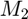)
- 'T2/T1' = static temperature ratio (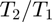)
- 'P2/P1' = static pressure ratio (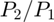)
- 'rho2/rho1' = static density ratio (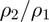)
- 'U2/U1' = velocity ratio (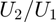)
- 'a2/a1' = speed of sound ratio (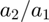)
- 'h2/h1' = static enthalpy ratio (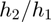)
- 'Tt2/Tt1' = stagnation temperature ratio (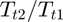)
- 'Pt2/Pt1' = stagnation pressure ratio (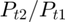)
- 'rhot2/rhot1' = stagnation density ratio (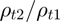)
- 'at2/at1' = stagnation speed of sound ratio (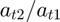)
- 'ht2/ht1' = stagnation enthalpy ratio (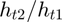)
- '(s2-s1)/cp' = nondimensional entropy change (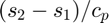)
Examples
Upstream Mach number (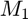) from all quantities/ratios across a normal shock in air (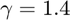). Note that all values are taken from the examples in the normal_shock documentation.
Upstream Mach number () from downstream Mach number ().
M2 = normal_shock_inverse('M2',0.4752)
M2 =
2.9998
Upstream Mach number () from static temperature ratio ().
T2_T1 = normal_shock_inverse('T2/T1',2.6790)
T2_T1 =
3.0000
Upstream Mach number () from static pressure ratio ().
P2_P1 = normal_shock_inverse('P2/P1',10.3333)
P2_P1 =
3.0000
Upstream Mach number () from static density ratio ().
rho2_rho1 = normal_shock_inverse('rho2/rho1',3.8571)
rho2_rho1 =
3.0000
Upstream Mach number () from velocity ratio ().
U2_U1 = normal_shock_inverse('U2/U1',0.2593)
U2_U1 =
2.9993
Upstream Mach number () from speed of sound ratio ().
a2_a1 = normal_shock_inverse('a2/a1',1.6368)
a2_a1 =
3.0001
Upstream Mach number () from static enthalpy ratio ().
h2_h1 = normal_shock_inverse('h2/h1',0.3733)
h2_h1 =
2.9998
Upstream Mach number () from stagnation temperature ratio ().
Tt2_Tt1 = normal_shock_inverse('Tt2/Tt1',1)
Warning: Cannot determine upstream Mach number -- the stagnation temperature ratio is 1 for any upstream Mach number. Tt2_Tt1 = NaN
Upstream Mach number () from stagnation pressure ratio ().
Pt2_Pt1 = normal_shock_inverse('Pt2/Pt1',0.3283)
Pt2_Pt1 =
3.0002
Upstream Mach number () from stagnation density ratio ().
rhot2_rhot1 = normal_shock_inverse('rhot2/rhot1',0.3283)
rhot2_rhot1 =
3.0002
Upstream Mach number () from stagnation speed of sound ratio ().
at2_at1 = normal_shock_inverse('at2/at1',1)
Warning: Cannot determine upstream Mach number -- the stagnation speed of sound ratio is 1 for any upstream Mach number. at2_at1 = NaN
Upstream Mach number () from stagnation enthalpy ratio ().
ht2_ht1 = normal_shock_inverse('ht2/ht1',1)
Warning: Cannot determine upstream Mach number -- the stagnation enthalpy ratio is 1 for any upstream Mach number. ht2_ht1 = NaN
Upstream Mach number () from nondimensional entropy change ().
ds_cp = normal_shock_inverse('(s2-s1)/cp',1)
ds_cp =
5.9737